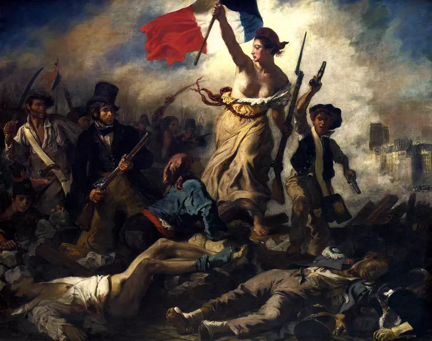
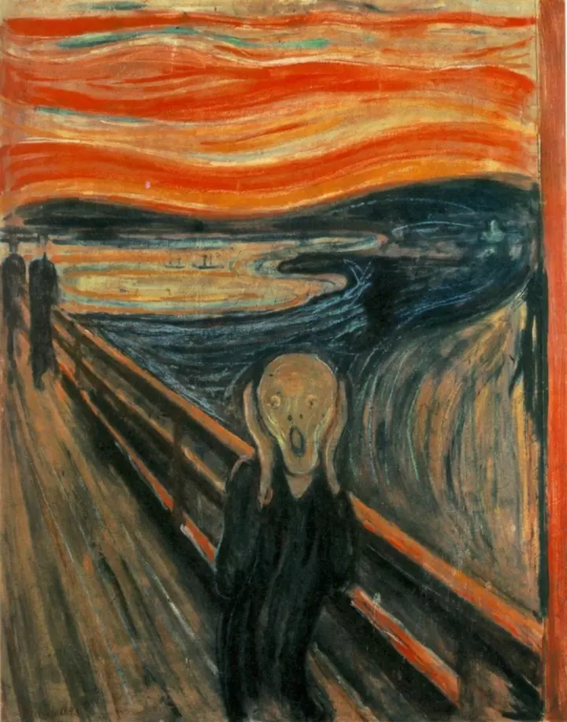
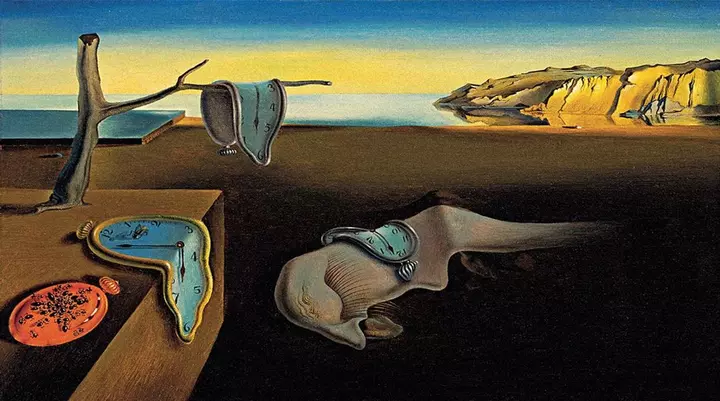
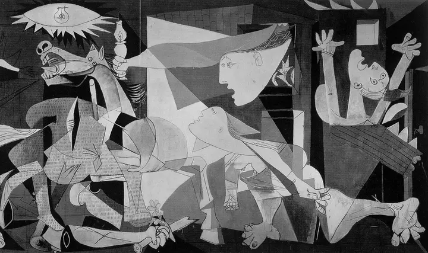
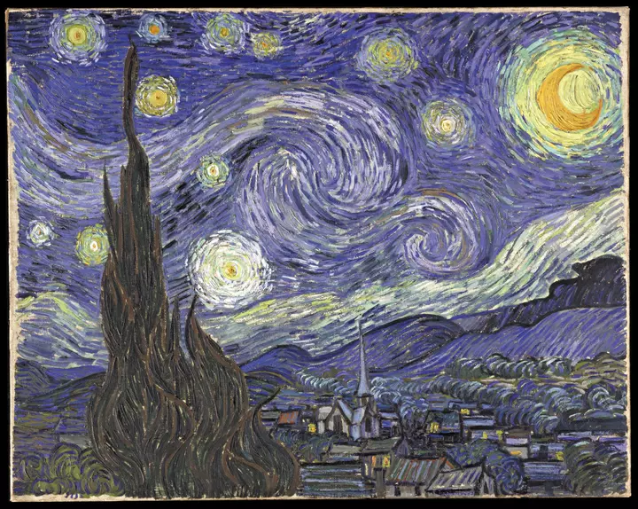
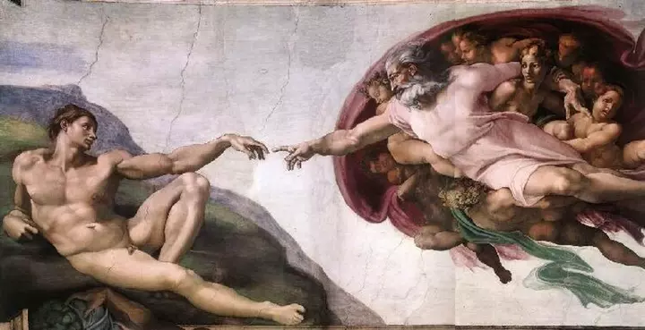

Эжен Делакруа «Свобода, ведущая народ» (1830)

Эдвард Мунк «Крик» (1893)
Энди Уорхол «Банка супа Кэмпбелл» (1962)

Сальвадор Дали «Постоянство памяти» (1931)

Пабло Пикассо «Герника» (1937)

Винсент Ван Гог «Звездная ночь» (1889)

Микеланджело «Сотворение Адама» (1511)